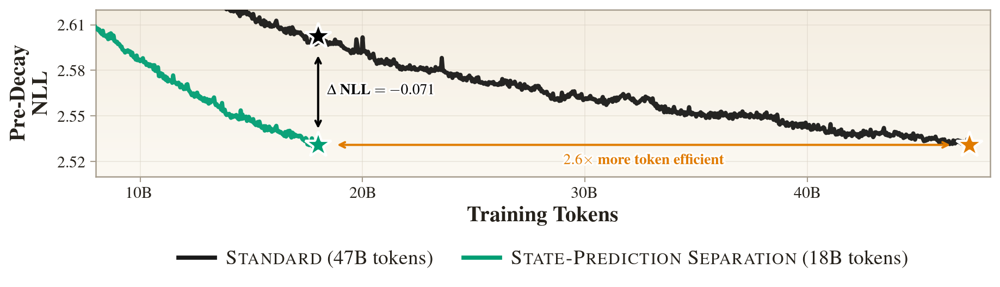
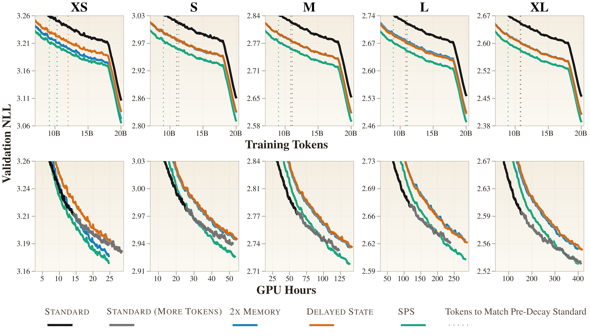
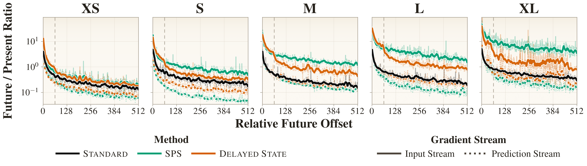
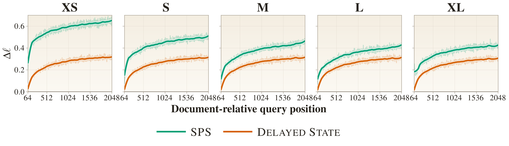

The tension SPS targets
In a standard autoregressive Transformer, the hidden state $h_i$ at position $i$ produces two things:
- the immediate prediction for $x_{i+1}$ via the language‑model head; and
- the KV entry $s_i$ that every later position $j > i$ will read from.
To see the two roles separately, picture each position as having its own copy of the parameters: write $\theta_i$ for the copy that produces $h_i$. By linearity, the gradient at that position splits into two terms, one for each role:
Both signals are routed through the same $h_i$, with no architectural way to keep them apart. Empirical work (Wu et al., 2024) shows pretrained Transformers pre‑cache: part of $h_i$ carries information that is useful for future tokens but not for the current prediction, rather than information that serves both. This effect grows with scale.
Next‑token prediction and state storage compete when forced through one shared hidden state. Routing them through separate streams yields better language modeling.
The SPS Transformer
We augment the input sequence with a learned <predict> token $\rho_i$ inserted after every real token:
Loss is applied only at $\rho_i$ positions: each $\rho_i$ predicts $x_{i+1}$. The attention mask sets what persists: input entries $x_i$ are persistent in the KV cache, and <predict> entries $\rho_i$ are evicted once they leave a sliding window of size $w$. So input representations accumulate the full state‑preparation gradient $\sum_{j>i}\nabla_{\theta_{x_i}} \ell_j$, while $\rho_i$'s gradient is dominated by the immediate prediction term $\nabla_{\theta_{\rho_i}} \ell_i$.
At inference the overhead is minimal. The persistent KV cache holds only input tokens, exactly matching the Standard Transformer's footprint. A small $w$‑slot ring buffer keeps the most recent <predict> entries. Each generated token triggers one decode step that forwards $(x_i, \rho_i)$ jointly and reads next‑token logits from the <predict> hidden state. Because autoregressive decoding is memory‑bound, forwarding the extra token adds negligible latency, the same property that motivates speculative decoding.
SPS matches Standard on a fraction of the data
We pretrain five model sizes (XS 53M, S 131M, M 379M, L 831M, XL 1.68B) on FineWeb‑Edu for 20B tokens (18B before the final learning‑rate decay, which we call the “pre‑decay” budget), following the GPT‑2 recipe and using nanoGPT as the training scaffold. All variants share the same backbone, parameter count, and hyperparameters; they differ only in attention pattern. We also train Standard for 40B tokens (47B at XL) for a fair GPU‑hours comparison.

Separation helps at every scale, and for the right reason
SPS adds compute (a forward pass per input token) and an extra mechanism (the <predict> insertion). Two ablations isolate whether separation, specifically, is what helps.
The two baselines. 2× Memory keeps every <predict> entry persistent, doubling the cache; Delayed State persists the <predict> slot instead of the input. Flip to the Delayed State and 2× Memory tabs in the explorer below to see each pattern next to SPS.
Standard versus SPS and the two baselines. A Standard Transformer uses the same hidden state for state and prediction. SPS interleaves a <predict> token $\rho_i$ after each input. Loss is taken at $\rho_i$ slots; only $x_i$ slots stay persistent in the KV cache, and $\rho_i$ slots are evicted after a $w$‑step window (we use $w{=}64$, tuned at the small scale). Each row of the matrix is a query token; reading across gives the keys it attends to, up to itself on the diagonal. The aligned strip below shows the same model as of the final step: the KV cache (solid = kept, hatched = evicted), the input tokens, and the loss $\ell_i$. Switch tabs to compare SPS against Standard and the two baselines; hover any row to see exactly which keys it reads.

At token parity, SPS simply wins. Compared at the same number of training tokens (the top row of the figure), SPS reaches lower validation NLL at every scale. Three results hold consistently across XS–XL:
- Validation NLL. At a matched token budget, SPS lowers validation NLL by 0.042 at XS, growing to 0.068 at XL.
- Generalization. Held‑out NLL on four out‑of‑distribution corpora drops by 0.09–0.15, and zero‑shot accuracy on five standard benchmarks improves by 2.3–3.1 points.
- Inference efficiency. Same persistent KV footprint as Standard (1.01×), throughput within 5–10% of Standard.
And it holds at compute parity too. Each SPS training step costs roughly 2× a Standard step, since every input token is paired with an inserted <predict> token, so a token‑matched comparison alone could look unfair to Standard. The bottom row of the figure settles it by plotting loss against GPU‑hours instead of tokens: after a short initial phase, SPS reaches any given validation loss in fewer total GPU‑hours than Standard, and training Standard on twice its pre‑decay budget (36B, and 47B at XL) still does not catch up. The doubled per‑step compute more than pays for itself: SPS is the cheaper model to train.
It is not just “more memory.”
2× Memory uses the same per‑step compute as SPS but keeps every <predict> entry persistent. So <predict> entries now serve both as a prediction site and as a state carrier for later queries (exactly the conflation SPS removes), at the cost of doubling the persistent KV cache. SPS, with half the persistent state, beats it on validation NLL at every scale. The advantage is not capacity‑based.
It is not just “extra compute before each prediction.”
Delayed State matches SPS's per‑step compute and Standard's persistent‑cache size, but commits the persistent state at the $\rho_i$ slot, one step after the input. The two streams aren't separated: $\rho_i$ still serves as both prediction and state. Delayed State does improve over Standard (the extra compute helps), but SPS beats it by 0.019–0.021 in validation NLL and 0.05–0.10 in corpus NLL at every scale.
Why separation helps: the gradients
We probe how each architecture allocates the prediction‑vs‑state gradient at training time. Again give each position its own copy of the parameters, writing $\theta_p$ for the copy that produces the hidden state at position $p$. In SPS and Delayed State each step has two such copies: the input slot $\theta_{x_i}$ and the predict slot $\theta_{\rho_i}$. For each source position $p$ and offset $k$, we back‑propagate the single step‑$k$‑ahead loss in isolation and form the ratio of the position‑$p$ gradient from $\ell_{i+k}$ to the one from the current‑step loss $\ell_i$:

SPS's input stream carries strictly more future‑loss gradient than Standard at every offset, while its prediction stream carries strictly less. The two roles end up on different tokens, and because the input stream is the persistent one, that gradient lands on exactly the state that survives to serve later queries. Delayed State inverts which stream persists: there the prediction stream $\rho_i$ carries the persistent state, and it is that stream that stays uniformly low. The gradient collects instead on the input stream, which stays respectable (comparable to or above Standard). But in Delayed State the input is the non‑persistent, windowed stream: its slot is evicted after the $w{=}64$ window, so past offset $k{=}64$ it falls below SPS and can carry gradient forward only indirectly. In short, Delayed State piles the future‑loss signal onto the stream it discards and starves the one it keeps.
Carrying future‑loss gradient at training time is necessary, but not sufficient: we need to check that SPS's persistent state is actually used at inference. For a trained model $M$, let $M_\omega$ be the same model run with its persistent cache forced to a sliding window of size $\omega$ (distinct from the prediction window $w$), and let $\ell_i(M)$ be the loss at document‑relative position $i$. The degradation from that restriction is:
We average each $\Delta\ell_i$ over 8,000 documents and plot it against the query position $i$.

What's next
SPS's per‑step training compute is roughly double Standard's because of the inserted <predict> token. An obvious follow‑up is whether the same separation can be obtained more cheaply: a shallower or narrower prediction stream, or a sparser persistent state. The two streams currently share all parameters; giving each distinct attention/FFN parameters now that the roles are decoupled is a natural next step.
Two further compute‑limited gaps remain in the evidence. We pretrain on a single corpus (FineWeb‑Edu); the consistent gains on out‑of‑distribution corpora and zero‑shot tasks suggest the trend transfers, but we have not tested alternative mixtures. And our largest scale is 1.68B. The SPS‑vs‑Standard gap widens monotonically across XS–XL, suggesting the trend extends to still‑larger models, but verifying that directly would require substantially more compute than we had available.
This matters in a regime where high‑quality human‑generated text is projected to run out. Learning more from each token directly extends the runway for pretraining, and in our scaling trend the advantage grows with model size.